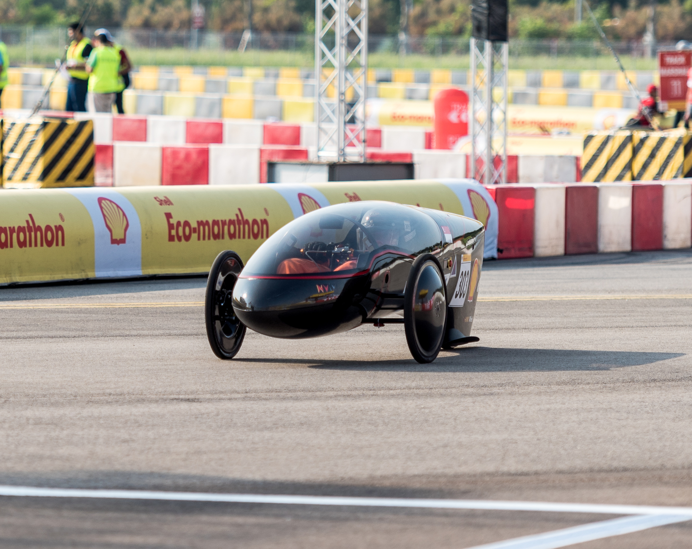

PinteractionA group of friends and I developed a kinetic table made from a dynamic array of 100 pinsin coordinated symphonic motion that responds interactively to audio and visual input. |
|
RoboMastersI joined a team of engineering students from my schoolparticipating in the RoboMasters competition by DJI. |
|
|  |
Nanyang VentureI was part of my school team working on electric carsand participated in the Shell Eco-marathon Asia competition. |
Motion planning and control in autonomous vehicles
I developed an RC car and a simulation model with a motion planning algorithm
|
|
Modelling the physical palpation examination
I designed an experimental procedure to mimic the physical palpation examination
|
|
Waste heat driven adsorption cooling and desalination systemI conducted experiments on adsorption chillers to study the steady state thermal behaviorand measure their performance under different operating parameters. |